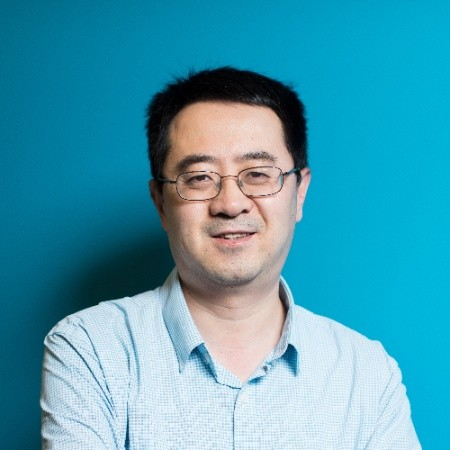
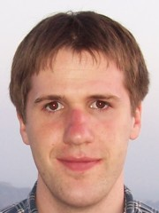

Invited Speakers
Fei Huang

Dr. Fei Huang is a Senior Director and Principal Research Scientist of Language Technology Lab, Alibaba DAMO Academy. He leads NLP foundation and machine translation teams, which developed AliNLP platform in AliCloud. The platform supports several hundreds internal and external clients with advanced NLP models, systems and solutions. Before Alibaba, Dr. Huang led the development of machine translation systems at Facebook AML which helps reduce language barriers for 20 Billion people. He was a senior researcher as IBM Watson after gradating from CMU with Ph.D. focusing on language technologies. Dr. Huang has published 30+ papers and 20+ patents on machine translation, multilingual natural language processing. He has served as Area Chairs at ACL-IJCNLP 2015, NLPCC 2018, Senior PC member of IJCAI/AAAI.
Bruce Zhang
Dr. Bruce Zhang is a Partner Science Manager at Microsoft, where he leads the selection and relevance science team of Microsoft Ads including both e-commerce retails ads and search ads. He has 15 years extensive R&D experience on machine learning, data mining, information retrieval, multimedia content processing and analysis in both academic and industry environments. He authors one monograph book on multimedia processing and data mining, 30+ papers on data mining, machine learning, predictive analysis, and multimedia information retrieval published on leading academic journals and top international conferences with significant citations. Bruce holds a PhD degree in Computer Science from State University of New York at Binghamton.
Kenneth Heafield
Dr. Heafield an Assistant Professor in the School of Informatics at the University of Edinburgh where he leads a machine translation group. He wrote the KenLM library for efficient n-gram language modeling and now works to make neural machine translation faster and higher-quality. He holds a PhD from Carnegie Mellon's School of Computer Science and did a postdoc at Stanford.